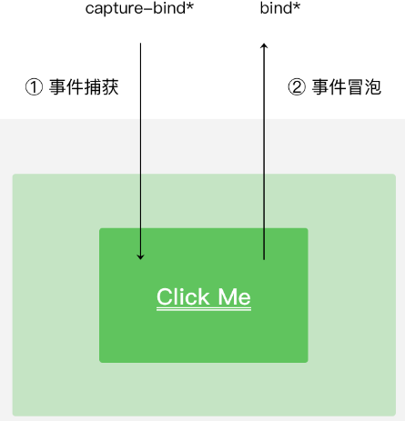

事件绑定的写法和组件属性一致，以key="value"的形式，其中：
key以bind或者catch开头，然后跟上事件的类型，如bindtap、catchtouchstart。自基础库版本1.5.0起，bind和catch后可以紧跟一个冒号，其含义不变，如bind:tap、catch:touchstart。同时bind和catch前还可以加上capture-来表示捕获阶段。
value是一个字符串，需要在对应的页面Page构造器中定义同名的函数，否则触发事件时在控制台会有报错信息。
bind和capture-bind的含义分别代表事件的冒泡阶段和捕获阶段，其触发的顺序如图3-8所示。

图3-8 事件捕获和冒泡触发时序
以下示例中，点击 inner view 会先后调用handleTap2、handleTap4、handleTap3、handleTap1。
代码清单3-20 事件的冒泡和捕获
<view
id="outer"
bind:touchstart="handleTap1"
capture-bind:touchstart="handleTap2"
>
outer view
<view
id="inner"
bind:touchstart="handleTap3"
capture-bind:touchstart="handleTap4"
>
inner view
</view>
</view>
bind事件绑定不会阻止冒泡事件向上冒泡，catch事件绑定可以阻止冒泡事件向上冒泡。如果将上面代码中的第一个capture-bind改为capture-catch，将只触发handleTap2(capture-catch将中断捕获阶段和取消冒泡阶段)
代码清单3-21 使用catch阻止事件的传递
<view
id="outer"
bind:touchstart="handleTap1"
capture-catch:touchstart="handleTap2"
>
outer view
<view
id="inner"
bind:touchstart="handleTap3"
capture-bind:touchstart="handleTap4"
>
inner view
</view>
</view>
注意，除表3-10列举的事件类型之外的其他组件自定义事件，如无特殊声明都是非冒泡事件，如<form/>的submit事件，<input/>的input事件，<scroll-view/>的scroll事件。
最后一次编辑于 2019年08月19日 （未经腾讯允许，不得转载）